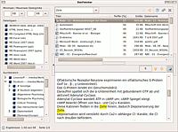

DocFetcher
Dieser Artikel wurde für die folgenden Ubuntu-Versionen getestet:
Ubuntu 16.04 Xenial Xerus
Zum Verständnis dieses Artikels sind folgende Seiten hilfreich:
DocFetcher  ist eine kleine und schnelle Desktop-Suchmaschine für GNOME, Xfce und KDE, die sich auf Volltextsuche in Textdokumenten beschränkt (keine Bilder, Videos, Mails, usw.).
ist eine kleine und schnelle Desktop-Suchmaschine für GNOME, Xfce und KDE, die sich auf Volltextsuche in Textdokumenten beschränkt (keine Bilder, Videos, Mails, usw.).
Ein nützliches Feature ist die portable Version des Programms: damit kann man ein ganzes Dokumentarchiv mitsamt DocFetcher und Indexen als Ordner frei umher bewegen – gut für USB-Sticks oder CD-ROMs. Die portable Version läuft sowohl auf Linux als auch auf Windows und Mac, sodass es sich in einem Dual-Boot-System verwenden lässt.
Unterstützte Dokumentformate:
HTML und einfache Textdateien
Portable Document Format (.pdf)
Microsoft Office (.doc, .xls, .ppt)
Microsoft Office 2007 (.docx, .xlsx, .pptx)
OpenOffice.org Writer, Calc, Draw und Impress (.odt, .ods, .odg, .odp)
Rich Text Format (.rtf)
AbiWord (.abw, .abw.gz, .zabw)
Microsoft Compiled HTML Help (.chm)
Microsoft Visio (.vsd)
Scalable Vector Graphics (.svg)
Durchsucht werden auch komprimierte Archive wie:
Zip Archive (.zip)
Sieben Zip Archive (.7z)
Voraussetzungen¶
DocFetcher erfordert eine Java-Laufzeitumgebung (JRE), welche mindestens der Version 1.6 (Java 6) oder neuer entsprechen sollte.
Installation¶
Zuerst lädt man sich die portable Version  herunter und entpackt die Archivdatei in einen beliebigen Ordner.[1] Nach einem Wechsel in den entpackten Ordner lässt sich das Programm mit dem Skript DocFetcher-GTK3.sh starten, das sich im DocFetcher-Ordner befindet. Für eine systemweite Installation zieht man den Artikel opt zu Rate.
herunter und entpackt die Archivdatei in einen beliebigen Ordner.[1] Nach einem Wechsel in den entpackten Ordner lässt sich das Programm mit dem Skript DocFetcher-GTK3.sh starten, das sich im DocFetcher-Ordner befindet. Für eine systemweite Installation zieht man den Artikel opt zu Rate.
Hinweis!
Fremdsoftware kann das System gefährden.
Benutzung¶
Ordner indizieren¶
Um in Textdokumenten suchen zu können, muss man diese zunächst einmal indizieren. In DocFetcher klickt man dazu mit rechts  auf den "Suchbereich" links unten. Dann wählt man den Menü-Eintrag "Index erstellen..." aus. Dies öffnet zuerst ein Fenster zum Auswählen des Ordners, den man indizieren möchte. Anschließend erscheint ein Fenster, in dem diverse Einstellungen vorgenommen werden können. Die Standardeinstellungen sind in der Regel ausreichend. Mit einem Klick auf die Schaltfläche "Start" wird die Indizierung schließlich gestartet. Nun muss man gegebenenfalls einige Minuten warten. Um weitere Indizes hinzuzufügen, einfach die eben aufgeführten Schritte erneut für weitere Ordner ausführen.
auf den "Suchbereich" links unten. Dann wählt man den Menü-Eintrag "Index erstellen..." aus. Dies öffnet zuerst ein Fenster zum Auswählen des Ordners, den man indizieren möchte. Anschließend erscheint ein Fenster, in dem diverse Einstellungen vorgenommen werden können. Die Standardeinstellungen sind in der Regel ausreichend. Mit einem Klick auf die Schaltfläche "Start" wird die Indizierung schließlich gestartet. Nun muss man gegebenenfalls einige Minuten warten. Um weitere Indizes hinzuzufügen, einfach die eben aufgeführten Schritte erneut für weitere Ordner ausführen.
Nach Dateien suchen¶
 Nach der Indizierung kann man einen Suchbegriff in das Textfeld ganz oben eingeben und die Eingabetaste ⏎ drücken. Direkt unter diesem Suchfeld erscheint daraufhin eine Liste von Treffern. Unterhalb der Trefferliste gibt es ein Vorschau-Fenster, welches eine Textvorschau für das Dokument liefert, das momentan in der Trefferliste angewählt ist. Mit einem Doppelklick auf einen Eintrag in der Trefferliste kann man die betreffende Datei mit dem damit assoziierten Programm öffnen.
Filtern und sortieren der Trefferliste¶
Auf der linken Seite auf der Benutzeroberfläche gibt es drei Bereiche, in denen die Ergebnisse entsprechend der Dateigröße, dem Dateityp und dem Ort auf dem Datenträger gefiltert werden können. Um die Ergebnisliste nach bestimmten Kriterien zu sortieren (z. B. Dateiname), kann man die entsprechenden Spaltenköpfe der Trefferliste anklicken.
Indizes verwalten¶
Über das Kontextmenü der "Suchbereich"-Fläche können diverse Aktionen im Zusammenhang mit den Indizes ausgeführt werden, z.B. Löschen von Indizes oder Aktualisieren eines Index, für den Fall, dass die indizierten Dateien modifiziert wurden. Wurde DocFetcher per Debian-Paket installiert, dann sorgt ein Hintergrunddienst dafür, dass die Indizes automatisch auf dem Laufenden gehalten werden, sodass eine Aktualisierung per Hand nicht nötig ist.
Benutzerhandbuch und Optionen¶
Oben rechts auf der Benutzeroberfläche gibt es eine "?"-Schaltfläche. Damit lässt sich bei Bedarf das eingebaute Benutzerhandbuch aufrufen. Die Schaltfläche rechts daneben öffnet das Einstellungsfenster.
 Übersichtsartikel
Übersichtsartikel- Erstellt mit Inyoka
-
 2004 – 2017 ubuntuusers.de • Einige Rechte vorbehalten
2004 – 2017 ubuntuusers.de • Einige Rechte vorbehalten
Lizenz • Kontakt • Datenschutz • Impressum • Serverstatus -
Serverhousing gespendet von